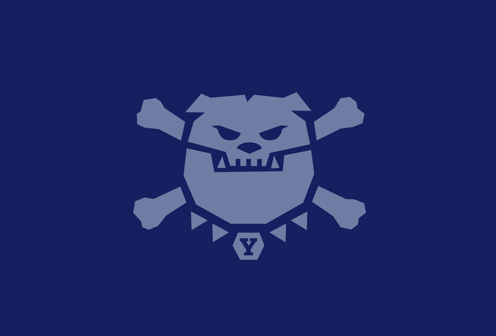
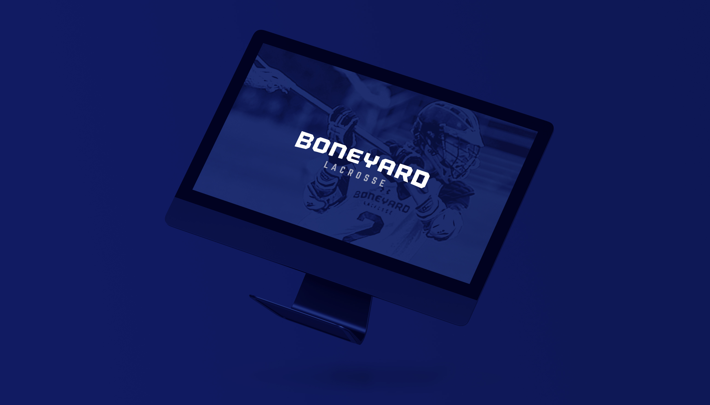

BONEYARD LACROSSE (2017) – Branding for Boneyard Lacrosse, a youth lacrosse club based in New Haven, CT. The program, which has roughly 200 participants between grades 6 and 11, wanted a visual identity that acknowledged and honored their affiliation with Yale University, while signaling something new, younger and contemporary. The icon and wordmark were designed as a subversive-but-recognizable take on Yale’s iconic bulldog mascot and color system.


